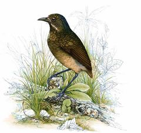
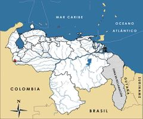

Grallaria chtonia
| Hormiguero tororoi tachirense | |
|---|---|
|  | |
| Riesgo de extinción | |
En peligro crítico (UICN) | |
| Clasificación científica | |
| Reino: | Animalia |
| Filo: | Chordata |
| Clase: | Aves |
| Orden: | Passeriformes |
| Familia: | Grallariidae |
| Género: | Grallaria |
| Especie: | Grallaria chtonia |
| Nombre binomial | |
|
Grallaria chtonia Wetmore et Phelps, 1956 | |
| Distribución | |
|
 Mapa de distribución de Grallaria chtonia | |
Contenido
Taxonomía
Nombres comunes
Hormiguero tororoi tachirense, Tachira antpitta
Notas taxonómicas
Sinónimos
Descripción
Hormiguerito pequeño que mide entre 17 y 18 cm de longitud. De costumbres terrestres, su plumaje es poco vistoso y sus colores predominantes son el verde oliva, pardo, rojizo y negro. La parte inferior del pecho y laterales son de un color blanquecino opaco, barreteado ligeramente de gris. Su coronilla es más grisácea, y posee un bigote contrastante y distintivo de color crema. Se alimenta de insectos entre la hojarasca, principalmente de hormigas, de ahí que su nombre común y el de la familia a la que pertenece haga referencia a estos insectos [1,2,3,4,5].
Distribución
Especie endémica de Venezuela. Su distribución conocida está restringida a la localidad tipo, ubicada al suroeste de Táchira, específicamente en la Hacienda La Providencia del río Chiquito, en las selvas nubladas entre 1.800 y 2.100 m de altitud. Algunos autores la consideran estrechamente relacionada con Grallaria guatemalensis, mientras que otros la relacionan más con Grallaria alleni, la cual se distribuye al oeste de Colombia y norte de Ecuador, y creen que podría tratarse de la misma especie. Sin embargo, la extrema separación geográfica entre ambas especies y las claras diferencias en la coloración, justifican su tratamiento como especies separadas [1,2,3,4,5].
Situación
'Lista Roja Venezuela' En Peligro Crítico B1ab(i,ii,iii)
'Lista Roja internacional' En Peligro B1ab(i,ii,iii); C2a(ii)
La especie no ha sido observada en los últimos 50 años. Sólo se conoce de 4 ejemplares machos colectados entre febrero de 1955 y marzo de 1956, que fueron empleados para la descripción de la especie. Su carácter endémico, su distribución muy limitada, estimada en menos de 500 km2, y la escasez de información sobre este taxón, hacen necesario considerarla entre las especies que requieren de atención especial. A escala internacional es catalogada En Peligro, ya que sus poblaciones se estiman entre 250 y 1.000 individuos [2,4,6].
Amenazas
Su distribución localizada hace a esta especie muy sensible a cualquier modificación de hábitat, aunque se sabe que los ambientes que utiliza se mantienen esencialmente vírgenes por encima de 1.600 m de altitud, con muy poca o ninguna perturbación. Aún así, la pérdida del hábitat continúa siendo una amenaza latente, ya que en esta zona de los Andes venezolanos los procesos de deforestación son acelerados y alarmantes, y el Parque Nacional El Tamá se encuentra bajo presión extrema [7]. Gran parte del área de río Chiquito ha sido transformada en plantaciones de café. Entre 1.900 y 2.200 m de altitud, el hábitat ha sido modificado para cultivos de papas y otros vegetales [2,4]. En general, la región está considerada como una de las más amenazadas del país, incluso en el interior del parque nacional. Dentro del parque existen sectores dedicados a usos no compatibles con su condición de área protegida, como cafetales y otros cultivos, además de ganadería, que en conjunto afectan casi 17% de la superficie total del parque. Existen fuertes presiones para la ampliación de estas actividades, especialmente en las áreas boscosas de los sectores Nula, Cutufí y Burgua. Adicionalmente, son numerosos los incendios forestales y existen otros problemas asociados a su ubicación fronteriza, como invasiones, contrabando, personas indocumentadas, narcotráfico y guerrilla [5,7,8].
Conservación
El Tamá es una zona de gran importancia biológica por la presencia de muchas especies endémicas y amenazadas, y está considerada como un Área de Importancia para la Conservación de las Aves (AICA) [5,7,8]. La Hacienda La Providencia está localizada dentro del Parque Nacional El Tamá. Es prioritario llevar a cabo estudios exhaustivos en la localidad tipo, ubicar y evaluar la población, principalmente entre mayo y junio, cuando se estima que la especie vocaliza con más frecuencia, determinar sus requerimientos ecológicos y la disponibilidad de hábitats, con énfasis en los valles aledaños [4]. Estos estudios podrían realizarse en forma simultánea con los de otras especies endémicas y amenazadas, especialmente con Grallaricula cucullata, ave simpátrica con ésta y de requerimientos similares [7].
Editores y Colaboradores
Christopher J. Sharpe, Miguel Lentino